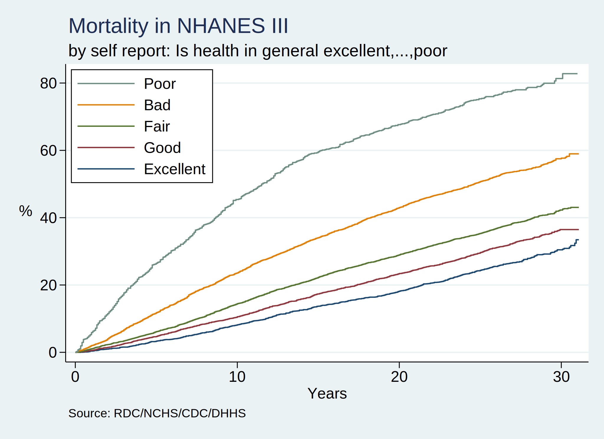

Increasing access to the NHANES 1988-2018 surveys & mortality linkage data via a user-friendly Stata program
Junming Gong, Mu Jin, Sohyeon Kwon, and Xueer Zhang
Background:
The National Health and Nutrition Examination Survey (NHANES) is developed to assess the helath and nutritional status of general population in United States. The survey investigates various sections including demographic characterististics, physical examinations, laboratory data, and so on. The survey sample popoulation is a population representative sample selected by complex survey design.
From this activity, we aimed to bring Stata work into the open science society.
. capture program drop nhanes
. program define nhanes
1.
. preserve
2.
. qui {
3.
. if 0 { //background:r(mean)
4.
. 1. Stata/BE or IC
5. 2. r(k) < 2048
6. 3. exam.DAT: r(k) == 2368
7. 4. inaccessible to jhustata
8. 5. program to grant access
9.
. }
10.
. if 1 { //methods:$keepvars
11.
. timer on 1
12.
. global github https://raw.githubusercontent.com/
13. global jhustata jhustata/book/main/
14. global keepvars HSAGEIR BMPHT BMPWT HAZA8AK1 CEP GHP
> HAB1
15.
. timer off 1
16.
>
. }
17.
. if 2 { //results:.dofiles
18.
. timer on 2
19.
. clear
20.
. do ${github}${$jhustata}nh3mort.do
21.
. if c(edition_real) == "BE" | c(edition_real) == "IC" {
22.
. clear
23.
. do ${github}${$jhustata}nhanes-alpha-if2.do
24.
. }
25.
. else {
26.
. clear
27.
. do ${github}${$jhustata}nhanes-alpha-if0.do
28.
. }
29.
.
. timer off 2
30.
. }
31.
. if 3 { //conclusions:queueing
32.
. timer on 3
33.
. timer on 31
34. clear
35. do adult.do
36. rename *,lower
37. save adult.dta,replace
38. timer off 31
39.
. timer on 32
40. clear
41. do exam.do
42. rename *,lower
43. save exam.dta,replace
44. timer off 32
45.
. timer on 33
46. clear
47. do lab.do
48. rename *,lower
49. save lab.dta,replace
50. timer off 33
51.
. timer off 3
52.
. }
53.
. if 4 { //acknowledge:linkage
54.
. timer on 4
55.
. use adult, clear
56. merge 1:1 seqn using exam,nogen
57. merge 1:1 seqn using lab,nogen
58. merge 1:1 seqn using nh3mort,nogen keep(matched)
59.
. timer off 4
60.
. }
61.
. if 5 { //dataset4class:
62.
. timer on 5
63.
. compress
64. lab dat "NHANES 1988-1994, survey & mortality"
65. save "nh3andmort.dta", replace
66.
. timer off 5
67.
. }
68.
. if 6 { //survivalanalysis:
69.
. timer on 6
70.
. lookfor mort
71. codebook mortstat
72. lookfor follow
73. g years=permth_exm/12
74.
. lookfor health
75. codebook hab1
76. global subgroup: var lab hab1
77.
. stset years, fail(mortstat)
78.
. #delimit ;
delimiter now ;
. sts graph if inrange(hab1,1,5),
> by(hab1)
> fail
> ti("Mortality in NHANES III",pos(11))
> subti("by self report: ${subgroup}",pos(11))
> yti("%",orientation(horizontal))
> xti("Years")
> per(100)
> ylab(0(20)80,
> format(%3.0f)
> angle(360)
> )
> legend(on
> lab(1 "Excellent")
> lab(2 "Good")
> lab(3 "Fair")
> lab(4 "Bad")
> lab(5 "Poor")
> ring(0)
> pos(11)
> col(1)
> order(5 4 3 2 1)
> )
> note("Source: RDC/NCHS/CDC/DHHS")
> ;
79. #delimit cr
delimiter now cr
.
. graph export nh3andmort.png,replace
80.
. stcox i.hab1 if inrange(hab1,1,5)
81.
.
. timer off 6
82.
. }
83.
. noi timer list
84.
. }
85.
. restore
86.
. end
. nhanes
1: 0.01 / 6 = 0.0023
2: 9643.33 / 5 = 1928.6658
3: 3519.88 / 5 = 703.9752
4: 27.87 / 5 = 5.5738
5: 202.89 / 5 = 40.5782
6: 24.20 / 5 = 4.8400
21: 0.00 / 1 = 0.0000
31: 633.15 / 5 = 126.6294
32: 2316.87 / 5 = 463.3748
33: 569.86 / 5 = 113.9710
Methods:
For Stata/BE or IC users this current program outputs an NHANES dataset with 22 pre-specified variables. We used Stata/SE for this program, therefore, there was no restriction in the variables.
We created the two-way plot presenting the mortlaity in the United States from 1995-2017. To investigate the general health status by age groups during 2017-2018, we additionally created a simple two-way scatter plot which showed mean general health score by age groups. We provided the additional plot to provide more information about recent health status of US population which may be used to predict mortality in the future study.
The general health status was measured by score (0:poor, 1: fair, 2: good, 3: very good: 4: Excellent).
Results:
According to the first Mortality plot, we could detect that the moratlity during 1988-2018 was higher when people self-reported their health as poor or bad.
According to the second scatter plot, we observed that the self-reported health score was higher in the younger aged group in 2017-2018.
. set scheme s2color
. nhanes
. use nh3andmort, clear
(NHANES 1988-1994, survey & mortality)
. di "obs: `c(N)' & vars: `c(k)'"
obs: 19599 & vars: 3643

. use merged1.dta, clear
.
. #delimit ;
delimiter now ;
. twoway
> scatter
> health_s age_g ,
> col(white)
> mcolor(%20)
> jitter(3) ||
>
> dot
> mean_health_s age_g,
> col(blue)
> msize(2)
> legend(off )
> xlab(1 "10s"
> 2 "20s"
> 3 "30s"
> 4 "40s"
> 5 "50s"
> 6 "60s")
> yline(90, lcol(red) lp(dash))
> xti("Age groups")
> yti("General Health Status")
> title("General Health Score by Age in 2017-2018 NHANES")
> ylabel(0(1)5);
. #delimit cr
delimiter now cr
. graph export twoway_1.png, replace
file twoway_1.png saved as PNG format
Conclusions:
Undesirable status of self-reported health was associated with the increment of mortality throughout the 1988-2018. Younger aged group reported better general health status.
Acknowledgments:
We initially published our Stata output in a Jupiter-book hosted by Github. All the .html content of the book was produced in a Python environment; however, Stata .html output will gradually replace the Python-based output of the book as we truly become advanced Stata users!
VS Code terminal is our IDE choice for committing and pushing our git content to our hub and have established a seamless process for updating our publication.
References: